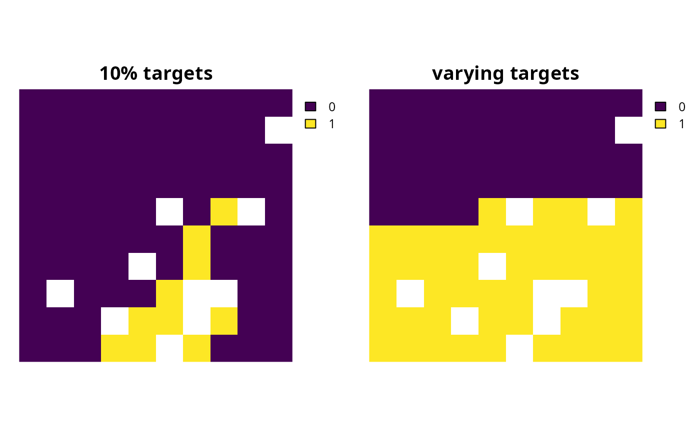
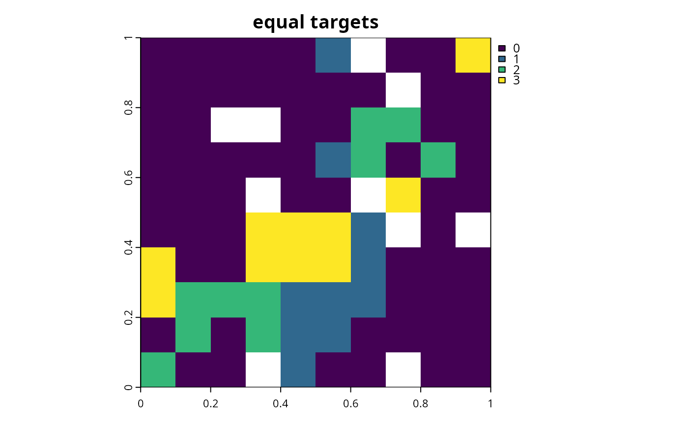
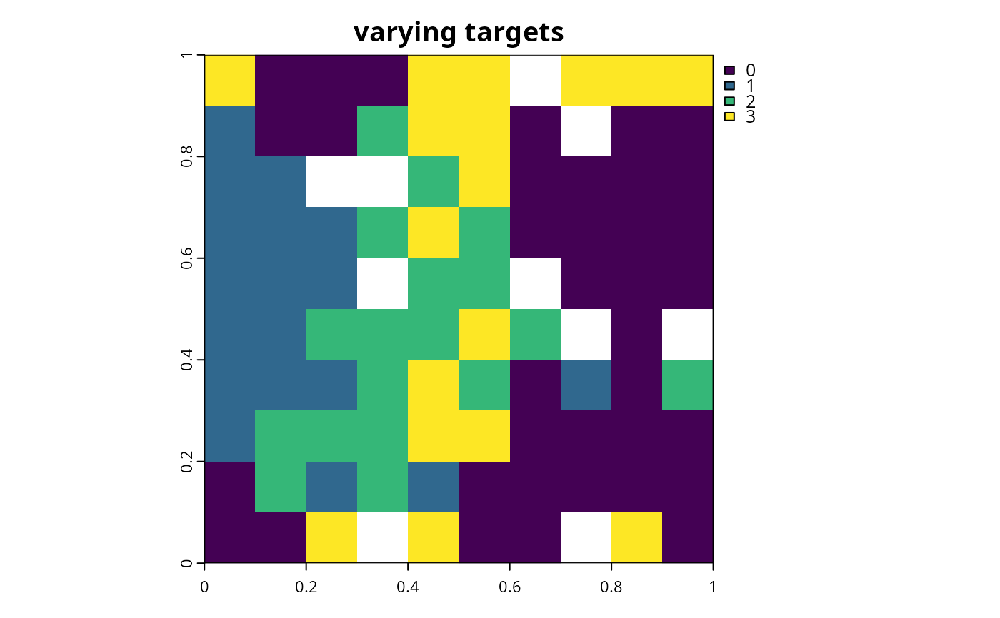

Set targets as a proportion (between 0 and 1) of the maximum level of
representation of features in the study area. Please note that proportions
are scaled according to the features' total abundances in the study area
(including any locked out planning units, or planning units with NA
cost data) using the feature_abundances() function.
add_relative_targets(x, targets)
# S4 method for ConservationProblem,numeric
add_relative_targets(x, targets)
# S4 method for ConservationProblem,matrix
add_relative_targets(x, targets)
# S4 method for ConservationProblem,character
add_relative_targets(x, targets)problem() (i.e., ConservationProblem) object.
Object that specifies the targets for each feature. See the Targets format section for more information.
Object (i.e., ConservationProblem) with the targets added
to it.
Targets are used to specify the minimum amount or proportion of a
feature's distribution that needs to be protected. Most conservation
planning problems require targets with the exception of the maximum cover
(see add_max_cover_objective()) and maximum utility
(see add_max_utility_objective()) problems. Attempting to solve
problems with objectives that require targets without specifying targets
will throw an error.
For problems associated with multiple management zones, this function can
be used to set targets that each pertain to a single feature and a single
zone. To set targets which can be met through allocating different
planning units to multiple zones, see the add_manual_targets()
function. An example of a target that could be met through allocations
to multiple zones might be where each management zone is expected to
result in a different amount of a feature and the target requires that
the total amount of the feature in all zones must exceed a certain
threshold. In other words, the target does not require that any single
zone secure a specific amount of the feature, but the total amount held
in all zones must secure a specific amount. Thus the target could,
potentially, be met through allocating all planning units to any specific
management zone, or through allocating the planning units to different
combinations of management zones.
The targets for a problem can be specified using the following formats.
targets as a numeric vectorcontaining target values for each feature. Additionally, for convenience, this format can be a single value to assign the same target to each feature. Note that this format cannot be used to specify targets for problems with multiple zones.
targets as a matrix objectcontaining a target for each feature
in each zone.
Here, each row corresponds to a different feature in argument to
x, each column corresponds to a different zone in argument to
x, and each cell contains the target value for a given feature
that the solution needs to secure in a given zone.
targets as a character vectorcontaining the names of fields
(columns) in the feature data associated with the argument to x that
contain targets. This format can only be used when the
feature data associated with x is a data.frame.
This argument must contain a field (column) name for each zone.
See targets for an overview of all functions for adding targets.
Other targets:
add_absolute_targets(),
add_loglinear_targets(),
add_manual_targets()
# set seed for reproducibility
set.seed(500)
# load data
data(sim_pu_raster, sim_features)
# create base problem
p <- problem(sim_pu_raster, sim_features) %>%
add_min_set_objective() %>%
add_binary_decisions() %>%
add_default_solver(verbose = FALSE)
# create problem with 10% targets
p1 <- p %>% add_relative_targets(0.1)
# create problem with varying targets for each feature
targets <- c(0.1, 0.2, 0.3, 0.4, 0.5)
p2 <- p %>% add_relative_targets(targets)
# \dontrun{
# solve problem
s <- stack(solve(p1), solve(p2))
# plot solution
plot(s, main = c("10% targets", "varying targets"), axes = FALSE,
box = FALSE)

# }
# create a problem with multiple management zones
p3 <- problem(sim_pu_zones_stack, sim_features_zones) %>%
add_min_set_objective() %>%
add_binary_decisions() %>%
add_default_solver(verbose = FALSE)
# create a problem with targets that specify an equal amount of each feature
# to be represented in each zone
p4_targets <- matrix(0.1, nrow = 5, ncol = 3,
dimnames = list(feature_names(sim_features_zones),
zone_names(sim_features_zones)))
print(p4_targets)
#> zone_1 zone_2 zone_3
#> feature_1 0.1 0.1 0.1
#> feature_2 0.1 0.1 0.1
#> feature_3 0.1 0.1 0.1
#> feature_4 0.1 0.1 0.1
#> feature_5 0.1 0.1 0.1
p4 <- p3 %>% add_relative_targets(p4_targets)
# solve problem
# \dontrun{
# solve problem
s4 <- solve(p4)
# plot solution (pixel values correspond to zone identifiers)
plot(category_layer(s4), main = c("equal targets"))

# }
# create a problem with targets that require a varying amount of each
# feature to be represented in each zone
p5_targets <- matrix(runif(15, 0.01, 0.2), nrow = 5, ncol = 3,
dimnames = list(feature_names(sim_features_zones),
zone_names(sim_features_zones)))
print(p5_targets)
#> zone_1 zone_2 zone_3
#> feature_1 0.16838399 0.04908221 0.06359158
#> feature_2 0.14775224 0.10731456 0.17964011
#> feature_3 0.19530969 0.18583855 0.15529418
#> feature_4 0.09884473 0.16747797 0.04122594
#> feature_5 0.16433284 0.14519964 0.14909414
p5 <- p3 %>% add_relative_targets(p4_targets)
# solve problem
# \dontrun{
# solve problem
s5 <- solve(p5)
# plot solution (pixel values correspond to zone identifiers)
plot(category_layer(s5), main = c("varying targets"))

# }